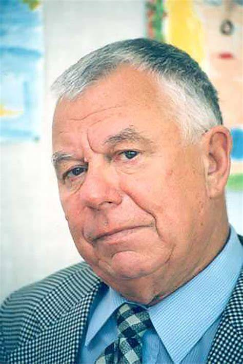

Школьный литературный проект
Наследие Анатолия Приставкина
Сайт о писателе, его времени и повести «Ночевала тучка золотая» — спокойный архив материалов для чтения, анализа и обсуждения.

Материалы проекта
Биография
Краткий рассказ о жизни Анатолия Приставкина и его литературном пути.
Творчество
Главные темы произведений писателя и значение повести «Ночевала тучка золотая».
Разбор повести
Персонажи, сюжет и актуальность произведения в материалах школьного проекта.
Исторический контекст
Политическая обстановка, которая помогает понять время и темы повести.
Персонажи
Схема взаимоотношений героев и материалы для анализа образов.
Сюжет
Визуальные материалы и презентация для работы с событиями повести.
Об Анатолии Приставкине
Анатолий Приставкин (1931–2008) был выдающимся российским писателем и публицистом, чьи произведения отражают память о Великой Отечественной войне и послевоенном времени. Несмотря на трудное детство, он стал известным автором, прославившимся своими реалистическими рассказами и романами. Его самый известный роман, «Ночевала тучка золотая», был написан в 1981 году и опубликован в 1988 году. Приставкин также активно участвовал в правозащитной деятельности и политической жизни России.